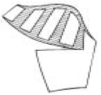
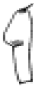
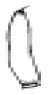
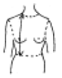

패션디자인산업기사 (2005-05-29 기출문제)
1과목: 피복재료학
1. 다음 중 면직물에 행해지는 가공은?
- 런던 슈렁크 가공
- 크레빙 가공
- 머서화 가공
- 시로셋 가공
(정답률: 알수없음)

2. 여러가지 섬유 중에서 폴리에스테르 섬유가 가지고 있는 우수한 특성인 것은?
- 탄성이 우수하고 내열성이 높다.
- 마찰 강도가 크다.
- 흡습성이 매우 좋다.
- 알칼리에 약하고 산에는 강하다.
(정답률: 알수없음)
3. 다음 중 문직물에 관하여 바르게 설명한 것은?
- 경사가 위사의 교차점을 일정한 간격으로 배치시켜 경사 또는 위사 어느 한쪽의 노출이 많은 직물이다.
- 연속적으로 공급되는 한 가닥 또는 여러 가닥의 실을 각각 편침을 사용하여 만든 직물이다.
- 경사와 위사가 1올씩 교대로 아래 위가 되도록 만든 직물이다.
- 태핏직기나 도비직기로는 제직할 수 없는 1완전조직의 올 수가 많은 큰 무늬의 직물이다.
(정답률: 알수없음)
4. 다음 중 오픈앤드 방적의 가장 큰 결점은?
- 작업이 불편하다.
- 실용성이 없다.
- 방적효과가 나쁘다.
- 고급 세사를 만들 수 없다.
(정답률: 알수없음)
5. 다음 중 수지가공의 목적을 바르게 설명한 것은?
- 양털섬유에 대한 방축융성의 부여
- 습윤 강도의 감소
- 직물에 삼과 같은 컷 모양과 굳기를 부여
- 원단의 풀을 제거하여 아름답고 풍부한 촉감 부여
(정답률: 알수없음)
6. 다음 중 주자직으로 제직된 직물이 아닌 것은?
- 도스킨
- 양단
- 공단
- 개버딘
(정답률: 알수없음)
7. 편성물에 대한 설명으로 가장 옳은 것은?
- 경사와 위사를 엮어서 만든다.
- 실로 고리를 만들고 이 고리에 새 고리를 걸어 만든다.
- 섬유를 바늘로 펀치하여 만든다.
- 실과 실을 서로 매듭 등으로 묶어서 만든다.
(정답률: 알수없음)
8. 다음 섬유 중 강도(g/d)가 가장 큰 섬유는?
- 견(silk)
- 면(cotton)
- 아마(linen)
- 레이온(rayon)
(정답률: 알수없음)
9. 다음 중 실의 번수를 나타내는 용어의 설명이 옳은 것은?
- 항중식은 마사에만 사용한다.
- 항중식은 실의 번수가 클수록 가는 실을 의미한다.
- 항중식은 섬도가 클수록 굵은 실을 의미한다.
- 항중식은 인조섬유에 사용된다.
(정답률: 알수없음)
10. 구리 암모늄 레이온 제조에 있어서 방사시 응고액은?
- 질산, 아세트산
- 알코올, 탄닌산, 물
- 황산, 수산화나트륨, 물
- 물, 질산
(정답률: 알수없음)
11. 나일론의 염색에 가장 많이 쓰이는 염료는?
- 직접 염료
- 산성 염료
- 염기성 염료
- 황화 염료
(정답률: 알수없음)
12. 내약품성에 관한 것이다. 아래의 섬유 중 알칼리에 손상을 받는 섬유는?
- 모
- 나일론
- 면
- 폴리에스테르
(정답률: 알수없음)
13. 다음 중 무명 섬유에 머서화 가공을 하였을 때 나타나는 특성을 옳게 설명한 것은?
- 광택이 없어지고 거칠어진다.
- 염색성이 나빠진다.
- 천연 꼬임수가 증가한다.
- 단면이 원형에 가까워진다.
(정답률: 알수없음)
14. 다음 섬유 중 용융점이 가장 낮은 섬유는?
- 나일론
- 폴리에틸렌
- 폴리에스테르
- 아세테이트
(정답률: 알수없음)
15. 생사의 28 Denier는 몇 m, 몇 g를 나타내는가?
- 길이 9000m에 무게 28g인 것
- 길이 450m에 무게 28g인 것
- 길이 900m에 무게 28g인 것
- 길이 4500m에 무게 28g인 것
(정답률: 알수없음)
16. 다음 섬유 중 그 원료가 축합중합 반응으로 얻어질 수 있는 것은?
- 엑스란
- 오올론
- 비닐론
- 나일론
(정답률: 알수없음)
17. 혼방사의 설명이 맞는 것은?
- 필라멘트로 된 방적사
- 스테이플로 만들어진 방적사
- 양모 섬유로 된 방적사
- 2가지 이상 섬유로 된 방적사
(정답률: 알수없음)
18. 저마의 특성 중 가장 옳은 것은?
- 단면은 타원형을 이룬다.
- 정련표백하면 광택이 소멸된다.
- 셀룰로스 섬유 중 결정성과 분자 배향성이 가장 잘 발달되었다.
- 탄성이 매우 풍부하며 탄성회복성이 좋다.
(정답률: 알수없음)
19. 다음 중 능직이 1완전조직을 형성하기 위한 최소한의 경사올수는?
- 3올
- 4올
- 5올
- 8올
(정답률: 알수없음)
20. 부직포의 특성이 아닌 것은?
- 방향성이 없다.
- 함기량이 많다.
- 절단부분이 풀리지 않는다.
- 내구성이 좋다.
(정답률: 알수없음)
2과목: 패션디자인론
21. 신체노출에 대한 수치심 때문에 복식을 착용하게 되었다는 착용동기설은?
- 장식설
- 신체보호설
- 정숙설
- 호부설
(정답률: 알수없음)
22. 넥라인 중 한쪽으로 기울어진 라인으로 언밸런스의 미가 있어 동적이고 새로운 감각을 주는 것은?
- 바또(bateau)넥라인
- 홀터(halter)넥라인
- 오브리끄(obligue)넥라인
- 오픈 후론트(open front)넥라인
(정답률: 알수없음)
23. 디테일의 설명에 가장 이상적인 스타일화는?
- 착장화
- 생략화
- 도식화
- 크로키
(정답률: 알수없음)
24. 먼셀의 색채표기법으로 맞는 것은?
- H/V/C
- V/HC
- HV/C
- V/H/C
(정답률: 알수없음)
25. 강조의 위치에 관한 설명 중 적당치 않는 것은?
- 기능상 불편을 초래할 위치에는 강조를 하지 않는다.
- 임산부 옷은 네크라인에 큰 프릴이나 리본을 달아서 체형을 감춘다.
- 신체부위 중 상대적으로 큰 부분을 강조점으로 한다.
- 강조의 위치는 중심보다 위에 있는 것이 좋다.
(정답률: 알수없음)
26. 패션일러스트레이션의 특성에 관한 설명 중 가장 거리가 먼 내용은?
- 경우에 따라서는 인체를 왜곡하고 특정부위를 강조하기도 한다.
- 옷의 이미지를 전달한다.
- 옷의 특성을 파악하여 그 특성을 충분히 강조한다.
- 인체를 사실적으로 그린다.
(정답률: 알수없음)
27. 복식을 착용하게 된 동기들 중 틀린 설명은?
- 테러리즘(Terrorism):적에게 친근감을 주기 위함이다.
- 트로피즘(Trophyism):곤충, 동물 또는 초자연적인 기후로부터 보호하기 위함이다.
- 유인설(Immodestry theory):이성에게 더욱 강한 자극을 주고 유혹하기 위해 옷을 입기 시작했다.
- 토테미즘(Totemism):종족의 상징과 숭배하는 자연물을 장식을 통해 나타내고, 악령을 쫓거나 행운을 부르는 부적을 사용하기 위함이다.
(정답률: 알수없음)
28. 디자인이 추구하는 궁극적인 목표는?
- 미
- 기능성
- 독창성
- 미와 기능의 조화
(정답률: 알수없음)
29. 디자인의 개념은 무엇인가?
- 그림으로 표시하는 작업의 과정
- 생각나는 대로 만드는 행위의 과정
- 남의 것을 옮겨 모방하는데 전력하는 과정
- 표현하고자 하는 것을 계획, 설계하고 실행하는 과정
(정답률: 알수없음)
30. 다음은 색입체의 구성도이다. 화살표 한 방향은 색의 어떤 속성을 가리키는가?
- 명도
- 색상
- 채도
- 색조
(정답률: 알수없음)
31. 문양의 방향 중 한쪽 방향을 향하여 나란하게 병행하면서 반복되는 것도 있고, 각기 다른 방향으로 엇갈리게 엮어지는 방향이 있는 패턴은?
- 전면 패턴
- 한방향 패턴
- 두방향 패턴
- 사방 패턴
(정답률: 알수없음)
32. 착용자를 돋보이게 하기 위한 의복으로 주 강조점의 위치는 어느 부분이 가장 바람직한가?
- 허리
- 네크라인
- 다리
- 팔
(정답률: 알수없음)
33. 다음 중에서 복식에 나타내는 선의 성격을 결정하는 요소가 아닌 것은?
- 착용 방법
- 디자인 선
- 옷감
- 구성 방법
(정답률: 알수없음)
34. 패션의 속성이 아닌 것은?
- 패션은 계속적으로 변화한다.
- 패션은 소비자에 의해 결정된다.
- 패션은 주기가 있다.
- 패션은 가격에 제한을 받는다.
(정답률: 알수없음)
35. 강조의 원리와 함께 사용하여 그 효과를 증대시킬 수 있는 리듬은?
- 메아리 리듬
- 교차반복 리듬
- 점진적 리듬
- 연속 리듬
(정답률: 알수없음)
36. 반복에 관한 설명 중 잘못된 것은?
- 지나치게 많은 반복은 지루함을 줄 수 있다.
- 반복은 형태와 색채에 사용하는 것이 좋으며 재질감에는 적합하지 않다.
- 인체는 대칭 구조이므로 의복에는 소매나 바지의 다리에 구조적 형태의 반복이 생긴다.
- 색채의 반복은 앙상블에 구조적 통일감을 준다.
(정답률: 알수없음)
37. 다음의 패션 용어 중 패드(fad)와 상반적인 성격을 갖는 것은?
- 하이 패션
- 클래식
- 매스 패션
- 붐(boom)
(정답률: 알수없음)
38. 스타일화를 그릴 때 소재를 표현하는 방법이 옳지 않은 것은?
- 모피 - 명도의 차이와 털의 흐름을 터치로 표현한다.
- 가죽 - 여러 단계의 명암 층을 가지고 날카로운 광택을 표현한다.
- 니트 - 두께를 명암의 음영으로 처리하고 무늬를 넣어 표현한다.
- 비닐 - 강력한 반사광이 있어서 밝고·어두운 부분만 표현한다.
(정답률: 알수없음)
39. 다음의 리듬방법 중에서 가장 다이나믹한 것은?
- 반복(Repetition) 리듬
- 플로잉(Flowing) 리듬
- 방사선(Radiation) 리듬
- 단계적(Gradation) 리듬
(정답률: 알수없음)
40. 의복의 기본 구성선을 만드는 것은?
- 터크(turk)
- 다트(dart)
- 퀼팅(quilting)
- 스모킹(smocking)
(정답률: 알수없음)
3과목: 의류상품학 및 복식문화사
41. 마켓 위크에 행해져서 소매업자에게 마켓상품과 패션트랜드에 대한 정보를 주는 패션쇼는?
- 살롱 쇼(salon show)
- 트렁크 쇼(trunk show)
- 트레이드 쇼(trade show)
- 공식적 쇼(formal runway show)
(정답률: 알수없음)
42. 바로크 시대 여자 복식의 가장 큰 변화는?
- 사치스러운 의복이 유행하였다.
- Skirt 속의 버팀대가 축소되었다.
- 금속제 콜셑이 유행하였다.
- 슈미즈를 착용하지 아니하였다.
(정답률: 알수없음)
43. 상품 구성의 폭을 결정하는 요소가 아닌 것은?
- 고객층에 의한 결정
- 상품의 유행성에 의한 결정
- 생산성에 의한 결정
- 업종의 특성에 의한 결정
(정답률: 알수없음)
44. 쁘레따뽀르떼(pret-鷗-porter)란?
- 고급 주문복을 의미한다.
- 꾸띄르 하우스(couture house)들의 집단을 뜻한다.
- 우수한 봉재작업을 뜻한다.
- 고급 기성복을 의미한다.
(정답률: 알수없음)
45. 1970년대 국내 패션 산업의 특징은?
- 대기업의 기성복 참여
- 기성복 생산공장 설립
- 매스 패션의 대량생산 체제 가능
- 모직물, 합섬직물의 생산과 품질 향상
(정답률: 알수없음)
46. 제조 메이커의 입장에서 판매 담당자들로부터 스타일, 수량에 관한 주문을 받는 것을 무엇이라 하는가?
- 품평회
- 수주회
- 패션쇼
- 소재기획
(정답률: 알수없음)
47. 다음은 마케팅 관리의 발전 단계를 순서별로 나열한 것이다. 옳은 것은?
- 생산지향 단계 → 판매지향 단계 → 마케팅지향 단계 → 인간 및 사회 지향 단계
- 생산지향 단계 → 판매지향 단계 → 인간 및 사회 지향 단계 → 마케팅지향 단계
- 판매지향 단계 → 생산지향 단계 → 마케팅 지향 단계 → 인간 및 사회 지향 단계
- 인간 및 사회 지향 단계 → 마케팅지향 단계 → 생산 지향 단계 → 판매지향 단계
(정답률: 알수없음)
48. 다음 중 비잔틴 복식의 특징이 아닌 것은?
- 몸 전체를 감싸는 형태
- 기독교를 상징하는 문양
- 동방의 화려한 색채감각의 장식
- 의복을 통한 인간미 표현
(정답률: 알수없음)
49. 다음 중 드레이퍼리형에 속하지 않는 것은?
- 그리이스의 히메이션
- 로마의 토카
- 남아메리카의 판쵸(pancho)
- 인도의 사리(sari)
(정답률: 알수없음)
50. 그리스의 키톤(chiton)에 대한 설명 중 옳지 않는 것은?
- 도릭 키톤은 그리스의 도리아에서 주로 착용되었던 키톤이다.
- 도릭키톤은 중후하고 개방적이며 스파르타적이다.
- 이오닉 키톤은 이오니아 지방에서 입혀진 옷으로 중후하고 개방적이다.
- 키톤을 고정시키기 위해서 피블라가 사용되었다.
(정답률: 알수없음)
51. 패션주기에 대한 설명으로 틀린 것은?
- 특정시기에 대상을 채택하는 정도가 다르다.
- 확산에는 일정시간이 소요된다.
- 소비자가 받아들이는 속도는 스타일에 따라 다르다.
- 소비자가 받아들이는 속도는 모두 비슷하다.
(정답률: 알수없음)
52. 로코코의 로브 중에서 영국의 라이딩 코트(riding coat)의 영향을 받은 것은?
- 로브 아 라 까라꼬
- 로브 아 라 레비트
- 로브 아랑글레즈
- 로브 아 라 시르카시엔느
(정답률: 알수없음)
53. 패션 사이클(fashion cycle)의 단계는?
- 새로운 스타일의 창조와 소개 - 사회적 가시도의 감소 - 패션선도자의 채택 - 사회적 동조의 증가 - 사회적 포화상태 초래 - 하락과 폐지
- 새로운 스타일의 창조와 소개 - 사회적 동조의 증가 - 패션 선도자의 채택 - 사회적 가시도의 증가 - 사회적 포화 상태 초래 - 하락과 폐지
- 새로운 스타일의 창조와 소개 - 패션 선도자의 채택 - 사회적 가시도의 증가 - 사회적 동조의 증가 - 사회적 포화상태 초래 - 하락과 폐지
- 새로운 스타일의 창조와 소개 - 사회적 가시도의 증가 - 패션 선도자의 채택 - 사회적 동조의 증가 - 사회적 포화상태 초래 - 하락과 폐지
(정답률: 알수없음)
54. 다음 중 중세말기인 고딕시대의 대표적 의복으로 적합하지 않은 것은?
- 꼬따르디(Cotehardie)
- 쉬르코 투베르(Surco touver)
- 블리오(Bliaud)
- 우플랑드(Houppelands)
(정답률: 알수없음)
55. 다음 중 1964년 꾸레주(courreges)에 의해 선보여 마리퀸트 등 여러 디자이너에 의해 다루어지면서 유행했던 스타일로 맞는 것은?
- 미니 스커트
- 색 드레스
- 핫 팬츠
- 진
(정답률: 알수없음)
56. 다음 중 우쁠랑드의 직물 재료로 사용되지 않는 것은?
- 실크
- 벨벳
- 금직
- 린넨
(정답률: 알수없음)
57. 시장을 세분화하지 않고 하나의 독립된 시장으로 보는 시장세분화의 예는?
- 완전 세분화
- 비세분화
- 소득 - 연령 세분화
- 소득계층에 따른 세분화
(정답률: 알수없음)
58. 광고의 주요 기능과 가장 거리가 먼 것은?
- 제품의 차별화--신제품 소개
- 정보 제공--고객 확보
- 수요의 억제--시장점유율 확대
- 판매활동 조성--소비자 교육
(정답률: 알수없음)
59. 버슬(bustle)스타일이란?
- 어깨와 가슴의 강조
- 엉덩이 부분의 강조
- 어깨부분의 강조
- 가슴부분의 강조
(정답률: 알수없음)
60. 패션 상품의 디자인 개발 과정의 주된 업무가 아닌 것은?
- 수주회
- 샘플 제작 및 수정
- 코디네이트 기획
- 소재 기획
(정답률: 알수없음)
4과목: 패턴공학 및 의복구성학
61. 단추를 달 때 실기둥의 치수는 어떻게 정하는가?
- 단추 두께
- 단추 반지름
- 앞단의 두께
- 단추 두께의1/2
(정답률: 알수없음)
62. 봉환의 특징은 신축성이 풍부하여 편성물의 봉제, 가봉, 라벨봉제 등에 쓰이는 형태는?
- 주변감침봉(overlock stitches)
- 단환봉(chain stitches)
- 본봉(lock stitches)
- 복합봉(safety stitches)
(정답률: 알수없음)
63. 패턴을 옷감에 배치할 때 유의해야 할 사항이 아닌 것은?
- 옷감의 표면에 패턴을 배치한다.
- 체크무늬나 줄무늬는 옆선의 무늬를 맞춘다.
- 요크, 커프스, 포켓, 앞단 등은 사선 또는 횡선으로 배치하여 무늬의 변화를 준다.
- 벨벳, 골덴 같이 짧은 털이 있는 옷감은 털의 결방향이 위로 가게 배치한다.
(정답률: 알수없음)
64. 재봉기의 요소 중 바늘판에 대하여 바늘이 상하운동을 할 때 천을 바늘판에 눌러주는 역할을 해주는 것은?
- 노루발
- 실채기
- 톱니
- 바늘판
(정답률: 알수없음)
65. 다음 중 박음질(sewing motion)기구에 해당 되지 않는 것은?
- 노루발 기구
- 바늘대 기구
- 루퍼 기구
- 위실조절 기구
(정답률: 알수없음)
66. 그레이딩(grading)에 대한 설명으로 가장 올바른 것은?
- 다트를 옮겨서 새롭게 디자인을 보정하는 공정
- 옷감위에 패턴을 놓고 무늬나 식서의 방향에 맞추어 배열하는 공정
- 표준이 되는 사이즈를 중심으로 각 부위별 치수의 감소와 증가에 따라 여러 가지 사이즈의 패턴을 제작하는 공정
- 옷감을 색상에 맞게 배열하는 공정
(정답률: 알수없음)
67. 다음 중에서 재킷의 소매단 시접 분량으로 적당한 것은?
- 1cm
- 1~2cm
- 3~4cm
- 9cm
(정답률: 알수없음)
68. 원가관리의 기준에서 원가의 3요소와 가장 거리가 먼 것은?
- 재료비
- 운송비
- 인건비
- 제조경비
(정답률: 알수없음)
69. 퍼커링 발생요인과 가장 상관이 적은 것은?
- 천
- 재봉틀
- 봉사 및 봉제 방법
- 북
(정답률: 알수없음)
70. 심 퍼커링을 방지하려면 어떻게 하여야 하는가?
- 얇은 소재는 노루발의 압력을 약하게 한다.
- 얇은 소재는 노루발의 압력을 강하게 한다.
- 윗실과 밑실의 장력을 강하게 조절한다.
- 밀도가 큰 옷감에 굵은 바늘을 사용한다.
(정답률: 알수없음)
71. 공업용 재봉기의 분류방법이 잘못된 것은?
- 대분류 - 봉환의 모양에 따른 분류
- 대분류 - 재봉기의 모양에 따른 분류
- 중분류 - 재봉기의 용도에 따른 분류
- 소분류 - 재봉기의 본체 형상에 따른 분류
(정답률: 알수없음)
72. 다음의 패턴으로 제작할 수 있는 소매는?



(정답률: 알수없음)
73. 그림과 같이 오른쪽 목옆점에서 유두를 지나 허리선까지 재는 계측 항목은?

- 유두길이(bust point length)
- 앞길이(full length)
- 앞어깨경사길이(front-shoulder - height length)
- 앞중심길이(length)
(정답률: 알수없음)
74. 어깨패드를 넣을 때 반드시 변형해야 할 것이 아닌 것은?
- 어깨높이를 높인다.
- 어깨넓이를 넓힌다.
- 소매산의 높이를 높인다.
- 진동둘레 너비를 넓힌다.
(정답률: 알수없음)
75. 제품의 생산 및 판매를 개시하기 전에 제품의 원가계산이 필요한 이유 중 틀린 것은?
- 작업시간의 예측
- 주문인수의 가부판정
- 원가견적
- 예산편성
(정답률: 알수없음)
76. 인체의 형태를 분류하는 방법에서 쉘던(Sheldon)의 체형 분류법으로 맞는 것은?
- 점액형, 투사형, 뇌허약형
- 소화기형, 호흡기형, 근육형, 두뇌형
- 내배엽형, 중배엽형, 외배엽형
- 세장형, 투사형, 비만형
(정답률: 알수없음)
77. 인체의 종단면과 횡단면을 계측할 수 있는 기기로서 125개의 측정봉이 병렬로 나란히 배열되어 있으며 상하좌우로 측정봉을 이동시켜 인체의 단면형상을 얻을 수 있는 2차원적 계측방법은?
- 슬라이딩게이지법
- 실루엣터법
- 체표각도기준법
- 사진계측법
(정답률: 알수없음)
78. 원형옷(foundation dress)의 재단법 중 틀린 것은?
- 옷감 올의 방향을 정리한다.
- 올 방향에 맞춰 옷본을 배치한다.
- 기준선은 옷감 안쪽에 표시한다.
- 맞춤 표시부분, 다아트, 중심선등은 너치로 표시한다
(정답률: 알수없음)
79. 다음 중 바지길이에 대한 설명으로 가장 올바른 것은?
- 뒤허리선에서 바지 길이까지이다.
- 옆허리선에서 바닥까지의 길이이다.
- 옆허리선에서 발목점까지의 길이이다.
- 앞허리선에서 발목점까지의 길이이다.
(정답률: 알수없음)
80. 실표뜨기에 관한 설명으로 가장 올바른 것은?
- 실표뜨기는 직선부위는 간격을 넓게, 곡선부위는 간격을 좁게 한다.
- 실표뜨기는 한겹의 옷감의 완성선을 표시할 때 사용한다.
- 실표뜨기는 옷감을 상하게 하는 표시방법이다.
- 실표뜨기는 항상 한올로 하는 것이 바람직하다.
(정답률: 알수없음)